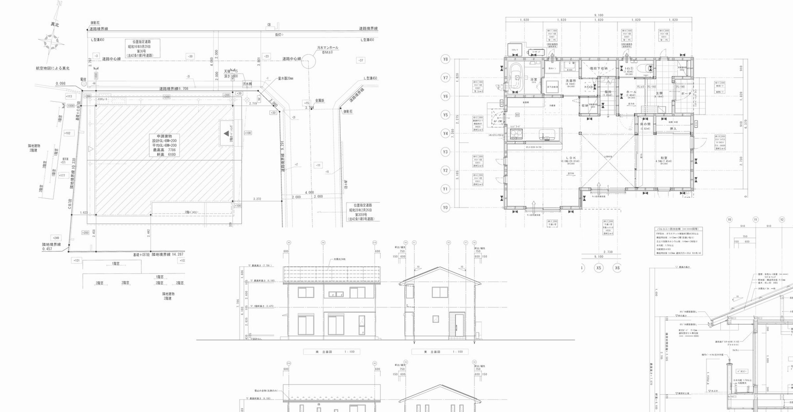
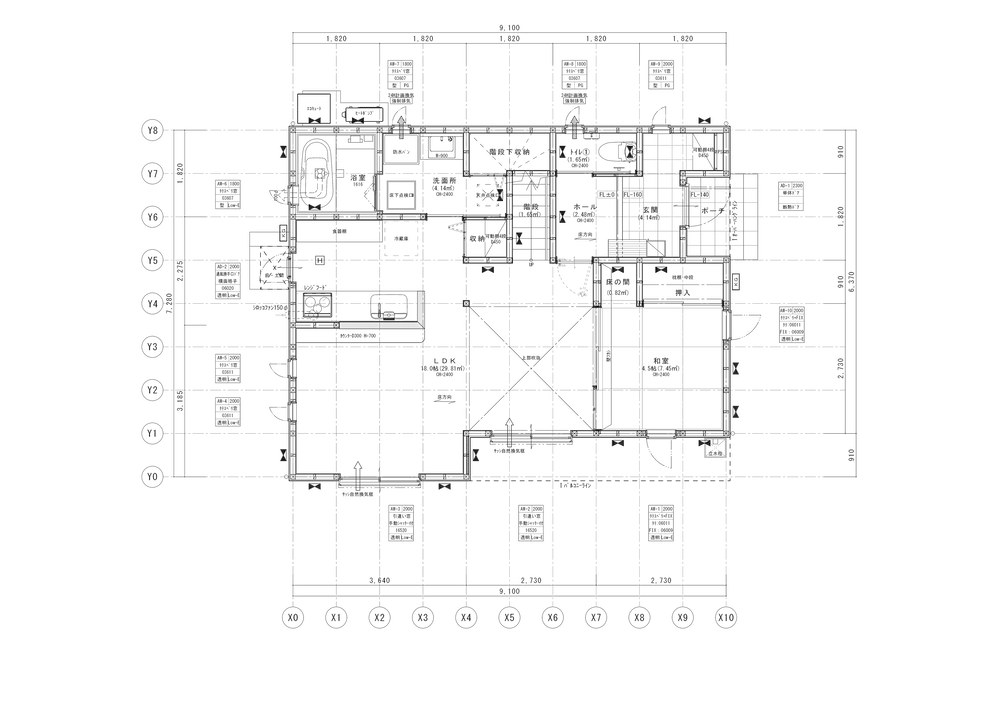

図面作成・設計補助
意匠・構造・設備の図面作成と、設計・現場の補助業務をお引き受けします。天空率・日影計算にも対応します。
詳しく見る：図面作成・設計補助
建築分野に特化したバックオフィス
図面作成・設計補助、施工図、構造・省エネ計算のサポート、申請書作成、積算、BIM・3Dモデル作成、CADトレースまで。
建築関連業務を、必要な部分だけお任せいただけます。
株式会社日本建築製図技術センター（略称：JADTEC／ジャドテック）は、 建築関連業務を専門にお引き受けするバックオフィスです。
建築の現場には専門性の高い業務が多く、すべてを自社で対応するのは容易ではありません。 設計事務所・工務店・ハウスメーカー・建設会社などの皆さまから、 図面作成や書類作成といった業務を、必要な部分だけお引き受けしています。

ご依頼いただける主な業務です。対応内容・必要な資料・納品形式は、各業務の詳細でご確認いただけます。
意匠・構造・設備の図面作成と、設計・現場の補助業務をお引き受けします。天空率・日影計算にも対応します。
詳しく見る：図面作成・設計補助建築全般の構造計算と、省エネ計算をサポートします。
詳しく見る：構造計算・省エネ計算等のサポート確認申請をはじめとする建築関連書類の作成と、その事務を支援します。
詳しく見る：申請書・建築関連書類の作成仕上げ図・躯体図などの施工図を、設計図から展開して作成します。
詳しく見る：施工図・各種建築図面2次元図面からのBIMモデル化や、3Dモデルデータの作成を行います。
詳しく見る：BIM・3Dモデルデータ作成プレゼンテーション用の3DCGパースやVRコンテンツを制作します。
詳しく見る：VR・3DCGパース紙の図面をCADデータへ変換し、再利用できる状態にします。
詳しく見る：手描き図面の電子化・CADトレース図面からの数量拾いと、積算業務をサポートします。
詳しく見る：積算サポート作図業務に付随して、図面・書類のスキャン、PDF／TIF化、製本に対応します。
詳しく見る：スキャニング・PDF／TIF化・製本当社が作成した図面の一例です。図面内の工事名称・設計者名などはマスクして掲載しています。
画像をクリック（タップ）すると拡大表示します
ご依頼をお任せいただくための、当社の対応体制です。
建築の図面・書類・計算を専門に扱い、各分野の専門スタッフが担当いたします。
国内に加え、アジアを中心とした海外にも拠点を構え、ご要望に応じて国内外を問わず対応いたします。
有資格者を含む専門家チームが、ご相談の内容に応じて対応いたします。
海外拠点でも国内拠点と同様の情報漏洩防止・セキュリティ対策を講じております。
お問い合わせから納品・お支払いまで、8つのステップで進みます。
| 社名 |
株式会社日本建築製図技術センター 略称：ＪＡＤＴＥＣ（ジャドテック） Japan Architectural Drawing Technical Centre Inc. |
|---|---|
| 代表取締役 | 渡邉 英規 |
| 本社 |
〒160-0023 東京都新宿区西新宿3丁目9-7 フロンティア新宿タワーオフィス 2階 TEL：03-3248-1506 / FAX：03-6800-1405 |
| 主な事業内容 |
CAD／CAM／BIM／グラフィックによる図面作成補助業務 建築関連事務支援業務 BPO（ビジネス・プロセス・アウトソーシング）支援業務 システム開発 |
| 拠点数 | 国内外14拠点 |
| 営業時間・定休日 |
営業日：平日 月曜～金曜 9時～18時 休業日：土曜・日曜・祝日（夜間・土日緊急対応可） |
ご依頼内容が固まっていなくても構いません。
「対応できる業務か知りたい」「概算だけ聞きたい」といったお問い合わせも歓迎いたします。